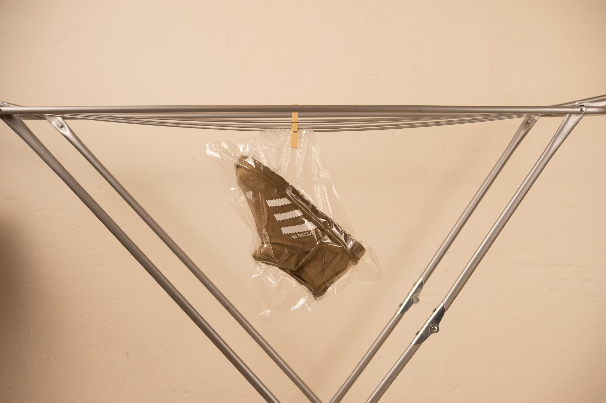

UGG x Adidas
Creative Direction · Design · Garment Construction

UGG by Adidas es un proyecto conceptual de diseño, confección y dirección creativa.
En los últimos años, las UGG se han vuelto tan populares que hoy es fácil encontrar versiones de ellas en cualquier sitio. Como consumidora de la marca, me surgió una pregunta: ¿cómo podría ofrecer una nueva lectura del producto sin alterar aquello que lo hace reconocible?
Para mí, la gracia de UGG reside precisamente en su comodidad, su calidez y una silueta que ya funciona. En lugar de rediseñarla por completo, miré hacia el contexto actual del footwear y las colaboraciones entre marcas, como New Balance × Miu Miu o Nike × Jacquemus. Ahí encontré la respuesta: una colaboración con Adidas.
UGG funciona muy bien dentro de su propio universo, pero pierde presencia cuando el lenguaje se vuelve más deportivo o streetwear. Incorporando únicamente el lenguaje visual de Adidas, la bota adquiere una nueva identidad sin perder su esencia. Para ello me inspiré en algunas de las siluetas más icónicas de la marca, especialmente las Spezial.
La intención no era inventar un producto completamente nuevo, sino demostrar que muchas veces la creatividad consiste en conectar y fusionar conceptos existentes para generar una nueva percepción.
El resultado es una colaboración conceptual en la que UGG adopta un enfoque más sport, mientras Adidas entra en el terreno de la bota de invierno desde una perspectiva cómoda, duradera y premium.